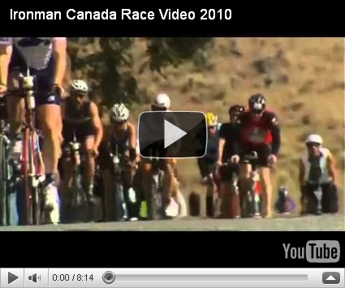
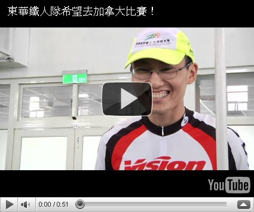

幫助國立東華鐵人三項校隊出國挑戰 226km 超級鐵人世界錦標賽

國立東華大學鐵人三項代表隊，已成立六年，今年取得 Ironman Canada 的九張門票，將遠征加拿大挑戰夏威夷世界鐵人三項錦標賽的資格。這將是台灣的大學生第一次出國挑戰 226km 的超級鐵人賽事。除了要把課對之外的所有時間都拿來練習之外，還要設法打工賺取旅費、裝備與機票錢。
東華鐵人將要挑戰的比賽：

若拿到分組前三名，將有資格參加十月份於夏威夷舉辦的世界錦標賽(目前已有近十年沒有臺灣的男鐵人取得此賽事的資格)。
目前還在努力練習與籌措經費的教練與鐵人隊員們，正在強力招募後援……

- 2011.05.26(四)Cervélo、FSA、Vision 聯合贊助東華大學贈與記者會中--教練公開募款：

如果你也想幫助他們，不管是一百元或是兩百元或任何比賽所需要的物資，都能幫助他們往加拿大西岸 226 公里的終點線更進一步。
- 銀行：臺灣企銀 （050）花蓮分行
- 戶名：國立東華大學 404 專戶 (鐵人三項校隊)
- 帳號：760 625 241 93
- **我們還最需要的是：三鐵防寒衣與比賽練習中所需的能量補給品。
- 聯絡資訊：
- 教練--徐國峰：rocky549@gmail.com
- 經理--Dana：danali1119@hotmail.com
鐵人隊教練--徐國峰的話：
我在東華就讀中文研究所期間，讀了《山海經》這本中國古代神話故事，最被其中夸父追日的故事所吸引。
《山海經．海外北經》：「夸父與日逐走，入日。渴欲得飲，飲于河、渭。河、渭不足，北飲大澤。未至，道渴而死。棄其杖，化為鄧林。」
在與鐵人隊員們一同練習與比賽的過程中，始終覺得我們就像古代的傳說中的夸父一樣。
那就像顏崑陽老師說：「在古老的傳說中，夸父總被人譏為愚蠢與不自量力。因為他追逐著落日，直到渴死。為什麼我們要將這種追求到底的執著譏為愚蠢？為什麼我們要將這份敢於追求的勇氣譏為不自量力？知道做不到，而還肯去做的人，總比善於為自己的怠惰找藉口的人，來得聰明些吧！因為誰說過：『力之執著，即是智慧』。能將自己的生命投注在一份理想的追求中，總比徒然無謂的苟存，要有意義多了吧！因為誰說過：『殉真理而死，即是另一種存在。』如是，我們還能去譏誚夸父的荒誕嗎？」（以上文字摘自顏崑陽：《新世紀散文家：顏崑陽精選集》，臺北市：九歌，2003 年 10 月 10 日，頁 80-81。）
因此激發了我想和鐵人隊一起去挑戰 226 公里世界鐵人錦標賽的夢想？我想要在八月份和東華大學鐵人隊的隊員們到加拿大完成一場 Ironman(226 公里)的超級鐵人三項賽。這是一場需要游 3.8 公里、騎自行車 180 公里，最後再跑 42.195 公里的三項全能競賽。我們將成為全臺灣第一個出國完成 Ironman 的大學校隊。包括機票、報名費與旅費，這要花上上百萬元，而且比賽的過程極度艱辛，我們必須在冰冷的海水中游泳，崎嶇的山路中騎車與跑步，這個夢想被身旁的師友譏為愚蠢與不自量力，但我們想要完成此一如夸父追日般的夢想。我們很清楚地知道自己不可能在這場國際賽事中拿到揚威國際的名次，但我們還是要把自己的生命投注在此種對體能極限的追求中。我們還是要再努力下去……從練習、籌資、準備裝備到完成這場 Ironman 的賽事的過程中，體會夸父「力之執著」中那無法言說的智慧。